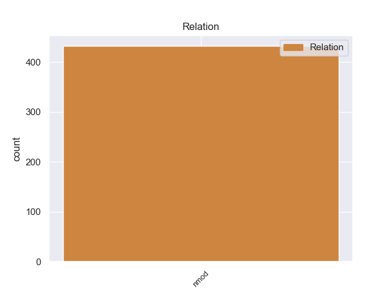
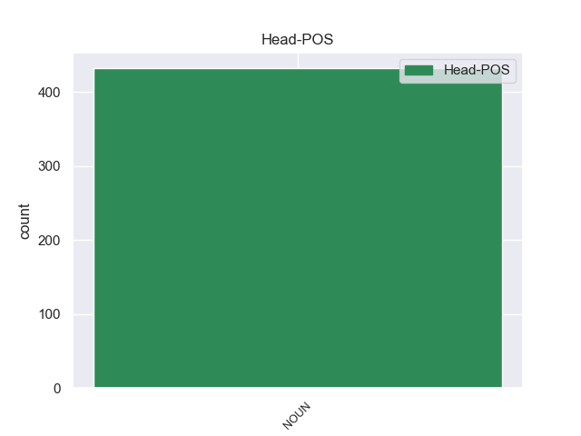
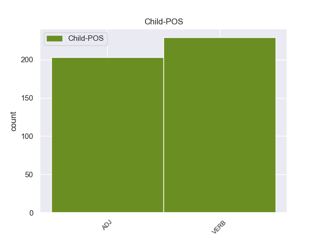

Distribution of features within this leaf



Agreement Rules sorted by frequency.
- When the dependent token is the nominal modifier(nmod) of the head token, and the head token is NOUN and the dependent token is VERB.
1 πρόκειται _ _ _ _ 0 _ _ _
2 για _ _ _ _ 0 _ _ _
3 αυτό _ _ _ _ 0 _ _ _
4 το _ _ _ _ 0 _ _ _
5 οποίο _ _ _ _ 0 _ _ _
6 αποκαλύφθηκε _ _ _ _ 0 _ _ _
7 κατά _ _ _ _ 0 _ _ _
8 τη _ _ _ _ 0 _ _ _
9 διάρκεια _ _ _ _ 0 _ _ _
10 αυτής _ _ _ _ 0 _ _ _
11 της _ _ _ _ 0 _ _ _
12 διαδικασίας _ _ _ _ 0 _ _ _
13 , _ _ _ _ 0 _ _ _
14 ότι _ _ _ _ 0 _ _ _
15 ο _ _ _ _ 0 _ _ _
16 Εισαγγελέας _ _ _ _ 0 _ _ _
17 κάποια _ _ _ _ 0 _ _ _
18 στιγμή _ _ _ _ 0 _ _ _
19 ζήτησε _ _ _ _ 0 _ _ _
20 από _ _ _ _ 0 _ _ _
21 την _ _ _ _ 0 _ _ _
22 Πρόεδρο _ _ _ _ 0 _ _ _
23 του _ _ _ _ 0 _ _ _
24 Σώματος _ _ _ _ 0 _ _ _
25 , _ _ _ _ 0 _ _ _
26 την _ _ _ _ 0 _ _ _
27 προκάτοχό _ _ _ _ 0 _ _ _
28 σας _ _ _ _ 0 _ _ _
29 , _ _ _ _ 0 _ _ _
30 λεπτομέρειες _ _ _ _ 0 _ _ _
31 για _ _ _ _ 0 _ _ _
32 την _ _ _ _ 0 _ _ _
33 ψήφο ψήφ NOUN _ Case=Acc|Gender=Fem|Number=Sing 0 _ _ _
34 που _ _ _ _ 0 _ _ _
35 έχουν _ _ _ _ 0 _ _ _
36 δώσει _ _ _ _ 0 _ _ _
37 οι _ _ _ _ 0 _ _ _
38 δύο _ _ _ _ 0 _ _ _
39 συγκεκριμένοι _ _ _ _ 0 _ _ _
40 βουλευτές βουλευτέςς VERB _ Case=Gen|Gender=Fem|Number=Sing 33 nmod _ _
41 προκειμένου _ _ _ _ 0 _ _ _
42 να _ _ _ _ 0 _ _ _
43 διευκρινιστεί _ _ _ _ 0 _ _ _
44 περαιτέρω _ _ _ _ 0 _ _ _
45 η _ _ _ _ 0 _ _ _
46 πιθανότητα _ _ _ _ 0 _ _ _
47 να _ _ _ _ 0 _ _ _
48 είχαν _ _ _ _ 0 _ _ _
49 ασκήσει _ _ _ _ 0 _ _ _
50 αθέμιτη _ _ _ _ 0 _ _ _
51 επιρροή _ _ _ _ 0 _ _ _
52 . _ _ _ _ 0 _ _ _
1 Υπάρχει _ _ _ _ 0 _ _ _
2 μια _ _ _ _ 0 _ _ _
3 άλλη _ _ _ _ 0 _ _ _
4 πλευρά _ _ _ _ 0 _ _ _
5 της _ _ _ _ 0 _ _ _
6 υπόθεσης _ _ _ _ 0 _ _ _
7 , _ _ _ _ 0 _ _ _
8 η _ _ _ _ 0 _ _ _
9 οποία _ _ _ _ 0 _ _ _
10 , _ _ _ _ 0 _ _ _
11 δυστυχώς δυστυχώς ADJ _ Case=Acc|Gender=Fem|Number=Sing 15 nmod _ _
12 , _ _ _ _ 0 _ _ _
13 γεννά _ _ _ _ 0 _ _ _
14 την _ _ _ _ 0 _ _ _
15 υποψία υποψία NOUN _ Case=Acc|Gender=Fem|Number=Sing 0 _ _ _
16 ότι _ _ _ _ 0 _ _ _
17 η _ _ _ _ 0 _ _ _
18 πρόνοια _ _ _ _ 0 _ _ _
19 σχετικά _ _ _ _ 0 _ _ _
20 με _ _ _ _ 0 _ _ _
21 τις _ _ _ _ 0 _ _ _
22 προϋποθέσεις _ _ _ _ 0 _ _ _
23 ελεύθερης _ _ _ _ 0 _ _ _
24 διεξαγωγής _ _ _ _ 0 _ _ _
25 του _ _ _ _ 0 _ _ _
26 κοινοβουλευτικού _ _ _ _ 0 _ _ _
27 έργου _ _ _ _ 0 _ _ _
28 δεν _ _ _ _ 0 _ _ _
29 απασχόλησε _ _ _ _ 0 _ _ _
30 επαρκώς _ _ _ _ 0 _ _ _
31 την _ _ _ _ 0 _ _ _
32 εισαγγελική _ _ _ _ 0 _ _ _
33 αρχή _ _ _ _ 0 _ _ _
34 : _ _ _ _ 0 _ _ _
Disagree Examples:
1 Ελπίζουμε _ _ _ _ 0 _ _ _
2 ότι _ _ _ _ 0 _ _ _
3 αυτή _ _ _ _ 0 _ _ _
4 η _ _ _ _ 0 _ _ _
5 ισπανική _ _ _ _ 0 _ _ _
6 Προεδρία _ _ _ _ 0 _ _ _
7 θα _ _ _ _ 0 _ _ _
8 σταθεί _ _ _ _ 0 _ _ _
9 σ _ _ _ _ 0 _ _ _
10 το _ _ _ _ 0 _ _ _
11 ύψος ύψος NOUN NOUN Case=Acc|Gender=Neut|Number=Sing 0 _ _ _
12 των _ _ _ _ 0 _ _ _
13 προηγουμένων προηγούμενος ADJ ADJ Case=Gen|Gender=Fem|Number=Plur 11 nmod _ SpaceAfter=No
14 . _ _ _ _ 0 _ _ _
1 Ο _ _ _ _ 0 _ _ _
2 Αναπληρωτής _ _ _ _ 0 _ _ _
3 Υπουργός _ _ _ _ 0 _ _ _
4 Οικονομικών οικονομικώ VERB _ Case=Gen|Gender=Neut|Number=Sing 26 nmod _ _
5 της _ _ _ _ 0 _ _ _
6 Ελλάδος _ _ _ _ 0 _ _ _
7 , _ _ _ _ 0 _ _ _
8 Χρήστος _ _ _ _ 0 _ _ _
9 Σταϊκούρας _ _ _ _ 0 _ _ _
10 , _ _ _ _ 0 _ _ _
11 έδωσε _ _ _ _ 0 _ _ _
12 για _ _ _ _ 0 _ _ _
13 διαβούλευση _ _ _ _ 0 _ _ _
14 νομοσχέδιο _ _ _ _ 0 _ _ _
15 σ _ _ _ _ 0 _ _ _
16 το _ _ _ _ 0 _ _ _
17 οποίο _ _ _ _ 0 _ _ _
18 προβλέπεται _ _ _ _ 0 _ _ _
19 αυτοματοποιημένο _ _ _ _ 0 _ _ _
20 σύστημα _ _ _ _ 0 _ _ _
21 για _ _ _ _ 0 _ _ _
22 την _ _ _ _ 0 _ _ _
23 παραγραφή _ _ _ _ 0 _ _ _
24 υπέρ _ _ _ _ 0 _ _ _
25 του _ _ _ _ 0 _ _ _
26 ελληνικού ελληνικο NOUN _ Case=Acc|Gender=Fem|Number=Sing 0 _ _ _
27 Δημοσίου _ _ _ _ 0 _ _ _
28 των _ _ _ _ 0 _ _ _
29 αδρανών _ _ _ _ 0 _ _ _
30 καταθέσεων _ _ _ _ 0 _ _ _
31 με _ _ _ _ 0 _ _ _
32 την _ _ _ _ 0 _ _ _
33 παρέλευση _ _ _ _ 0 _ _ _
34 της _ _ _ _ 0 _ _ _
35 20ετίας _ _ _ _ 0 _ _ _
36 . _ _ _ _ 0 _ _ _